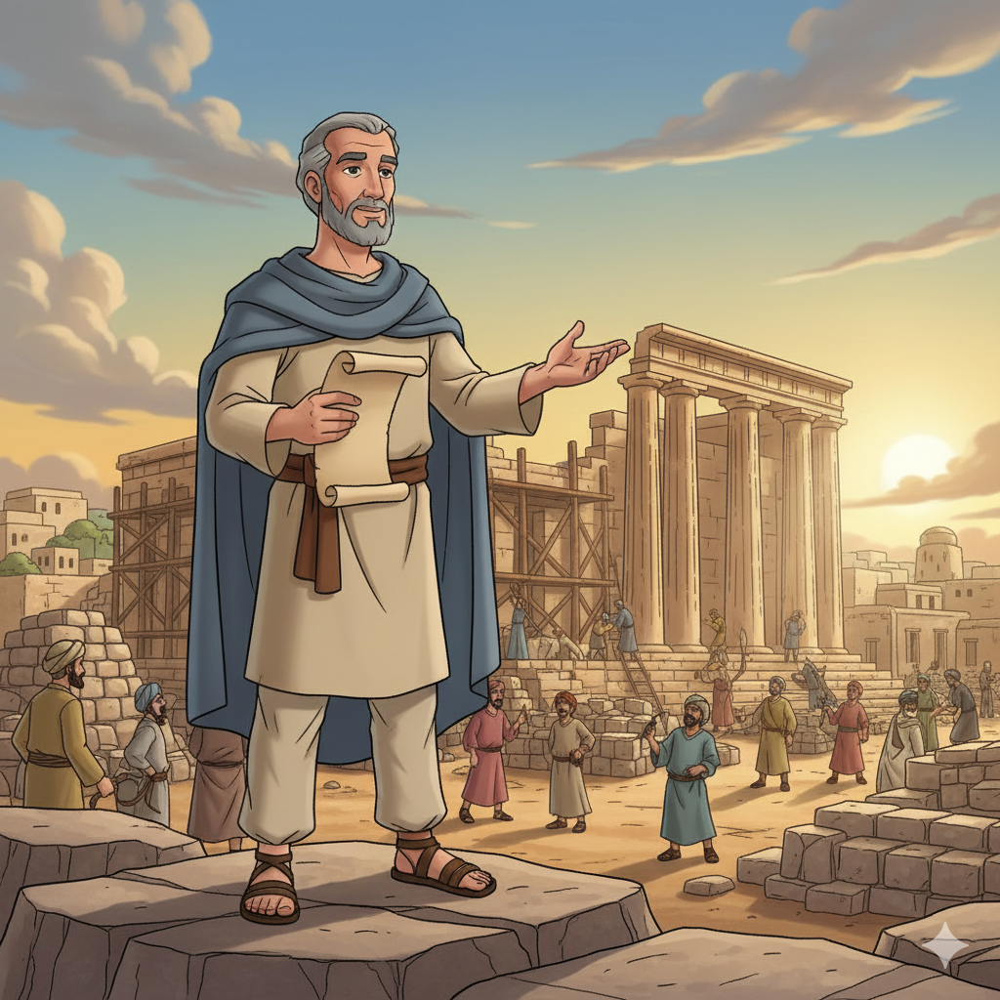
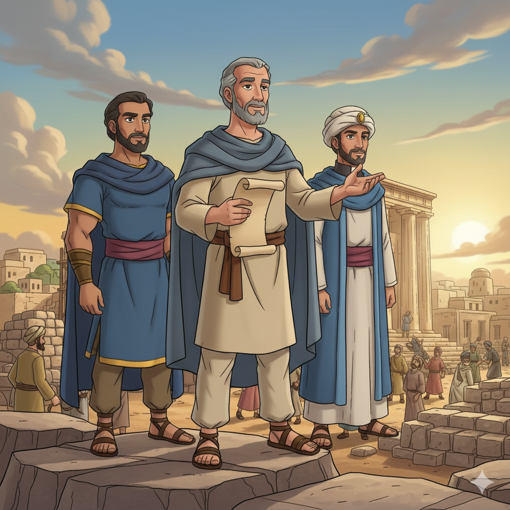
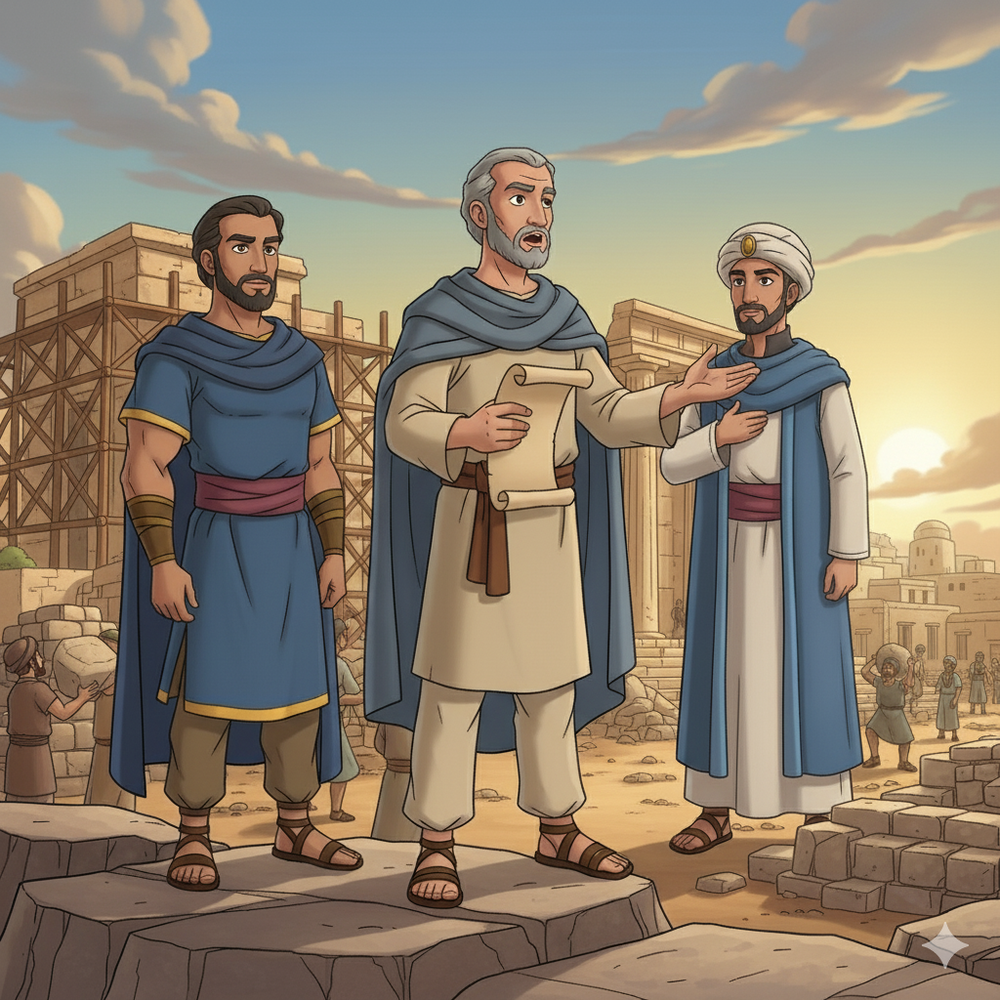
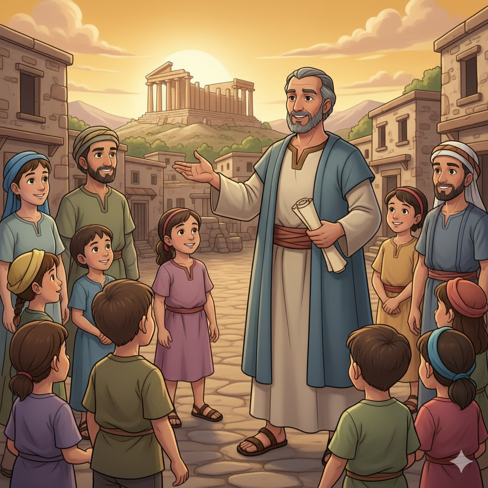
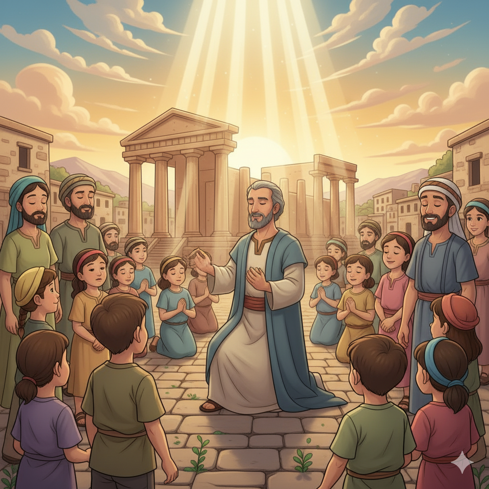
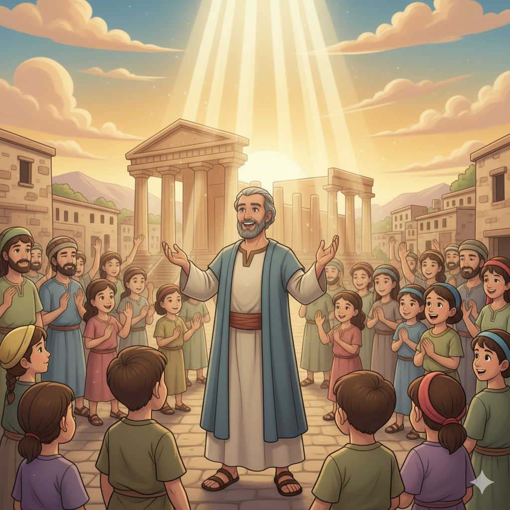

Reconstruindo o Templo de Deus — Um Resumo Visual para Crianças
O povo construía suas casas luxuosas,
Mas o templo de Deus estava em ruínas dolorosas.
Ageu veio com mensagem clara e verdadeira:
"Coloquem Deus em primeiro, de maneira sincera!"
Quando priorizamos o Senhor com amor,
Ele nos abençoa com Seu favor!
📖 Ageu 1:4-9
"Sejam fortes!" Deus disse ao povo escolhido,
"Eu estou com vocês, não tenham medo nem gemido!"
Zorobabel e Josué se levantaram com fé,
E o povo trabalhou, de joelho e de pé.
Com Deus ao nosso lado, somos mais que vencedores,
Ele transforma desafios em grandes louvores!
📖 Ageu 2:4-5
O templo antigo era cheio de esplendor,
Mas Deus prometeu algo ainda maior e melhor!
"A glória desta casa será mais radiante,
E trarei paz", disse o Senhor constante.
Quando obedecemos com coração sincero,
Deus traz restauração, isso é verdadeiro!
📖 Ageu 2:9
"Sê forte... e trabalha, pois Eu sou contigo, diz o Senhor dos Exércitos."
📖 Ageu 2:4
Toda vez que você precisar de coragem para fazer algo difícil, lembre-se: Deus dos Exércitos está com você!
O nome "Ageu" significa "meu dia festivo" ou "festivo". Ele profetizou no período pós-exílio, quando o povo havia voltado da Babilônia. Sua mensagem era direta: parem de adiar — construam agora!
🔔 Seu Diagnóstico:
"É tempo de vocês morarem em casas caiadas, e esta casa ficar em ruínas?" — Ag 1:4
Zorobabel era governador de Judá e descendente direto do rei Davi. Ele liderou o primeiro grupo de exilados de volta da Babilônia. Deus o chamou de "sinete" — como o anel que o rei usa para selar documentos reais!
👑 A Promessa Real:
"Far-te-ei como sinete, pois te escolhi, diz o Senhor dos Exércitos." — Ag 2:23
Josué (Jeshua) era o sumo sacerdote que trabalhou ao lado de Zorobabel na reconstrução. Ele representava o lado espiritual da restauração — enquanto Zorobabel liderava a construção, Josué restaurava a adoração!
🙏 A Dupla Poderosa:
"Zorobabel... e Josué... e todo o restante do povo obedeceram." — Ag 1:12


O povo voltou do exílio há 16 anos e ainda não terminou o templo! Ageu diz: "Por isso os céus retiveram o orvalho e a terra reteve seus frutos." A desobediência tem consequências. Em 23 dias, o povo começa a construir!
O povo desanimou ao ver que o novo templo era menor e mais simples que o de Salomão. Deus responde: "Seja forte! Eu estou convosco! A glória desta última casa será maior que a da primeira!"
Deus usa uma lição sobre contaminação/santidade para ensinar que a obediência transforma tudo. Então promete Zorobabel como "sinete" — sinal de que Deus honra quem O obedece!
✨ Em apenas 4 meses:
4 mensagens proféticas que mudaram a história de Israel!
Ageu ensina que quando adiamos o que é de Deus, não prosperamos. O povo trabalhava muito mas colhia pouco (Ag 1:6). Colocar Deus em primeiro lugar não é religioso — é sábio!
"Meu é o ouro e Minha é a prata" (Ag 2:8). O templo novo era mais simples, mas Deus prometeu que Sua glória o encheria. A presença de Deus é o verdadeiro tesouro — não a beleza do prédio!
O povo obedeceu antes de ver a glória que Deus prometeu. Às vezes Deus pede que demos o primeiro passo na fé, sem ver o resultado final — e Ele cumpre Sua promessa!


O propósito mais imediato: fazer o povo terminar o templo que ficou parado 16 anos por preguiça e medo dos inimigos. Ageu é o profeta que move pessoas da inércia para a ação!
O templo não era só um prédio — era o sinal de que Deus habitava no meio do Seu povo. Reconstruir o templo era reconstruir o relacionamento com Deus e a identidade de Israel como nação de Deus.
"A glória desta última casa será maior" (Ag 2:9) aponta além do templo físico. Deus tem planos maiores — um Templo onde Ele mesmo habitaria em pessoa!
"Neste lugar darei paz, diz o Senhor dos Exércitos."
📖 Ageu 2:9b
Ageu é um dos únicos livros proféticos com datas exatas! Suas 4 mensagens foram entre agosto e dezembro de 520 a.C. — apenas 4 meses! Em 23 dias após a primeira mensagem, o povo já havia começado a construir. Que impacto imediato!
Ageu tem apenas 2 capítulos e 38 versículos — é o segundo livro mais curto de toda a Bíblia (só Obadias é menor)! Mas sua mensagem foi tão eficaz que moveu uma nação inteira de volta à obediência. Qualidade, não quantidade!
Quando o povo ficou desanimado porque o novo templo parecia mais simples, Deus disse: "Meu é o ouro e Minha é a prata!" (Ag 2:8). Deus não precisava de suas riquezas — Ele só queria a obediência deles. E prometeu que Sua glória preencheria o templo!

Ageu prometeu que a glória do templo reconstruído seria maior que a de Salomão (Ag 2:9). O cumprimento foi Jesus! Quando Jesus entrou naquele mesmo templo (que Herodes ampliou sobre o de Zorobabel), o próprio Deus-Filho estava ali. O Templo jamais foi tão glorioso!
Deus chamou Zorobabel de "sinete" (anel real do rei) em Ag 2:23. Isso é uma referência messiânica — Zorobabel estava na linhagem direta de Jesus! Em Mateus 1:12-13, Zorobabel aparece na genealogia de Jesus. Deus preservou a linhagem real para o Messias!
Ageu pregava sobre um templo de pedras. Mas com Jesus, o plano de Deus foi além: "Não sabeis que sois templo de Deus e que o Espírito de Deus habita em vós?" (1Co 3:16). Cada cristão é um templo! E juntos, somos "edificados para morada de Deus" (Ef 2:22).
🔑 A Grande Conexão:
Templo de pedras (Ageu) → Jesus = o Templo vivo (Jo 2:21) → Nós = templos do Espírito Santo (1Co 6:19). A glória foi crescendo: pedras → carne → você!
O povo cuidava da própria casa antes da casa de Deus. O que você costuma colocar antes de Deus no seu dia? Como poderia mudar essa ordem?
O povo desanimou porque o novo templo parecia inferior ao antigo. Você já desanimou comparando o que tem com o que os outros têm? O que Deus te diria como disse ao povo de Ageu?
Paulo diz que você é templo do Espírito Santo (1Co 6:19). Assim como o povo cuidou do templo de pedras, como você cuida do "templo" que você é — seu corpo, sua mente, seu coração?
Faça uma lista de 5 coisas que você pode fazer esta semana para colocar Deus em primeiro lugar (oração, leitura, ajudar alguém, ir ao culto...). Marque cada uma quando fizer!
Ageu encorajou o povo com "Sê forte, pois Eu sou contigo!" Encontre alguém desanimado esta semana e encoraje-o com uma palavra ou um gesto de apoio — seja o "Ageu" na vida de alguém!
Pesquise com um adulto como eram o Templo de Salomão e o Templo de Zorobabel. Desenhe os dois lado a lado e escreva: "A glória desta casa será maior!" Inclua Jesus no terceiro templo — o seu coração!
Trilho Kids | Desenvolvido com ❤️ para crianças © 2025